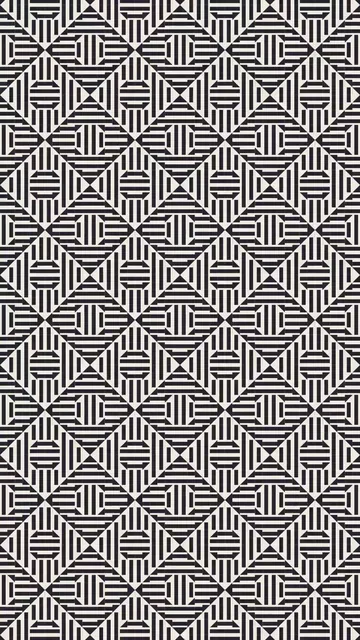
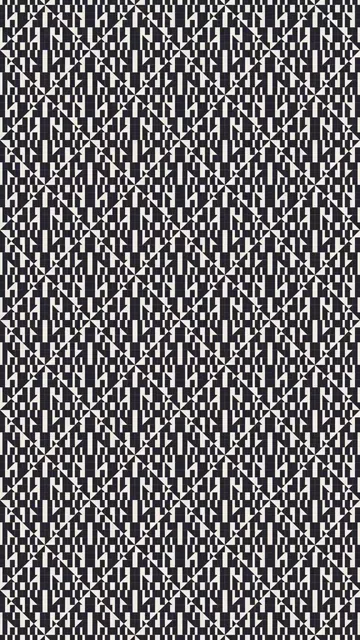
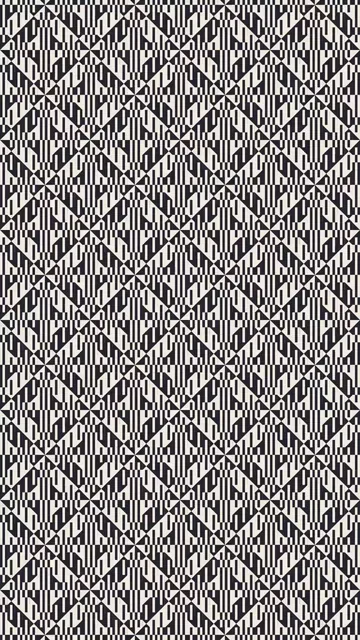
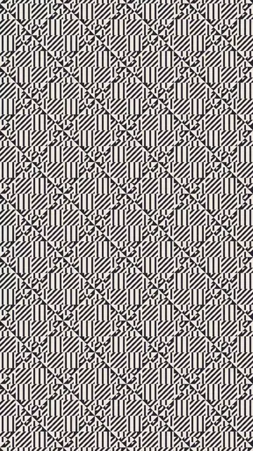
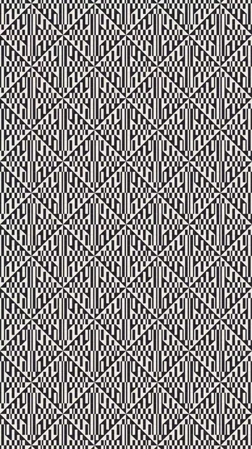

コレクション B121

他の言語：Français · English · Español · ไทย · 简体中文 · Русский · Português · हिन्दी · Deutsch · Italiano
6グループ中 2 · 5個のアニメーション
幅の異なる帯：リズムは比率に表れます。 クリックするまで何も読み込まれず、再生されるのは一度に1つだけです。各アニメーションは、別の速さや別の色でプレビューできます。





B3x は BA33 とまったく同じ絵を描くため、独自のアニメーションはありません。